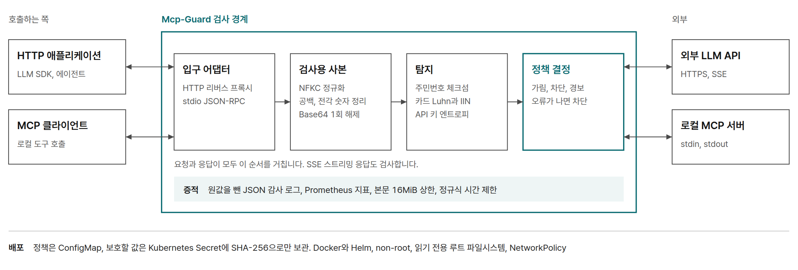

배경
생성형 AI를 업무에 쓰면 사람이 붙여 넣은 문서나 로그에 개인정보와 시크릿이 섞이기 쉽습니다. MCP 서버는 HTTP가 아니라 표준 입출력(stdio)으로 JSON-RPC 메시지를 주고받는 경우가 많아서, 네트워크 경계에 둔 프록시로는 내용을 볼 수 없습니다.
정규식만으로 찾으면 띄어 쓴 주민번호나 전각 숫자, Base64로 감싼 값이 그대로 빠져나갑니다. 반대로 숫자 모양만 보고 막으면 정상 요청까지 막혀서 아무도 쓰지 않는 도구가 됩니다.
한 일

두 경로를 같은 정책으로 검사
HTTP 리버스 프록시는 요청과 응답 본문, URL path와 query, SSE 이벤트를 검사합니다. stdio 어댑터는 MCP 클라이언트와 서버 사이에서 줄 단위 JSON-RPC 요청과 응답을 읽어 같은 정책을 적용합니다.
탐지 규칙과 기본 정책
| 대상 | 판별 방법 | 기본 정책 |
|---|---|---|
| 주민등록번호 | 날짜 타당성과 mod-11 체크섬 | 체크섬 일치 시 차단 |
| 카드번호 | 14~16자리, IIN 첫 숫자, Luhn 검사 | 차단 |
| 계좌번호 | 숫자 그룹과 앞뒤 40자 안의 은행 문맥 | 마스킹 |
| API 키와 시크릿 | 알려진 접두어, JWT와 PEM 형식, 엔트로피 | 차단 |
| 문서 등급 | 대외비, CONFIDENTIAL 같은 표기 | 경보 |
이 밖에 전화번호, 조직이 지정한 보호값(원문 또는 SHA-256 해시), 사용자 규칙도 정책에 넣을 수 있습니다.
우회 표현 정규화
처음 버전은 원문 그대로만 검사했고, 띄어 쓴 주민번호나 전각 숫자는 그냥 통과했습니다. 탐지 전에 원문 위치를 유지한 파생 문자열을 만들어 검사하도록 바꿨습니다. 마스킹은 파생 문자열이 아니라 원래 입력의 해당 범위에 적용합니다.
- 유니코드 NFKC 정규화로 전각 숫자와 문자를 일반 문자로 바꿉니다.
- 숫자 사이에 끼운 공백과 zero-width 문자를 걷어 냅니다.
- Base64는 한 번만 디코딩합니다. 후보 64개, 토큰 4,096자, 디코딩 총량 64KiB로 상한을 둬서 검사 자체가 자원을 잡아먹지 않게 했습니다.
실패했을 때와 운영
검사 중 오류가 나면 요청을 통과시키지 않고 막습니다(fail-closed). 감사 로그에는 탐지 결과만 남기고 민감한 원값은 기록하지 않습니다. 정책은 스키마로 검증하고 시크릿은 설정과 분리했으며, 업무상 필요한 예외는 만료 시간이 있는 허용 목록(TTL allowlist)으로만 열 수 있습니다. 처리 결과는 Prometheus 지표로 내보냅니다.
Dockerfile과 Helm 차트, CI 워크플로를 만들었고, 로컬 k3d 클러스터에 배포해 pod 2개가 Running 상태로 뜨는 것까지 확인했습니다.
결과
| 지표 | 결과 | 조건 |
|---|---|---|
| 내장 회귀 테스트 | 양성 35/35, 오탐 0/14 | 합성 한국 개인정보와 시크릿 |
| 우회 표본 탐지 | 10/60 → 56/60 | 원문만 검사한 경우 대비 정규화 적용, 재현율 16.667% → 93.333% |
| 정상 표본 오탐 | 0/30 → 0/30 | 고정 정상 표본 30건 |
| 스캔 추가 지연 | 평균 0.0440ms, p95 0.0774ms | 스캔 모드별 18,000회 |
| HTTP 프록시 추가 지연 | 평균 3.10ms, p95 3.65ms | 1,102B 요청, localhost 200회 짝 비교 |
| 스트리밍 첫 이벤트(TTFB) | 37.158ms → 4.892ms | SSE 25ms 간격, 모드별 100회 |
| 테스트 | 165 통과, 1 건너뜀 | 건너뛴 1건은 Windows에서 돌지 않는 POSIX 권한 테스트 |
아직 못 막는 것
- 우회 표본 60건 중 4건은 아직 놓칩니다. 이 4건은 테스트에 그대로 남겨 두었습니다.
- 응답을 차단해도 이미 나간 요청은 되돌릴 수 없습니다.
- 작은 합성 데이터셋에서 나온 결과라, 실제 서비스의 탐지율이나 오탐 0을 뜻하지 않습니다.
수치는 공개 커밋 aaee611 시점의 보고서 값입니다. 우회 사례와 테스트 초안은 Claude Code와 Codex에게 제안받았고, 탐지 기준과 정책, 정규화 방식, 최종 반영 여부는 직접 판단했습니다.